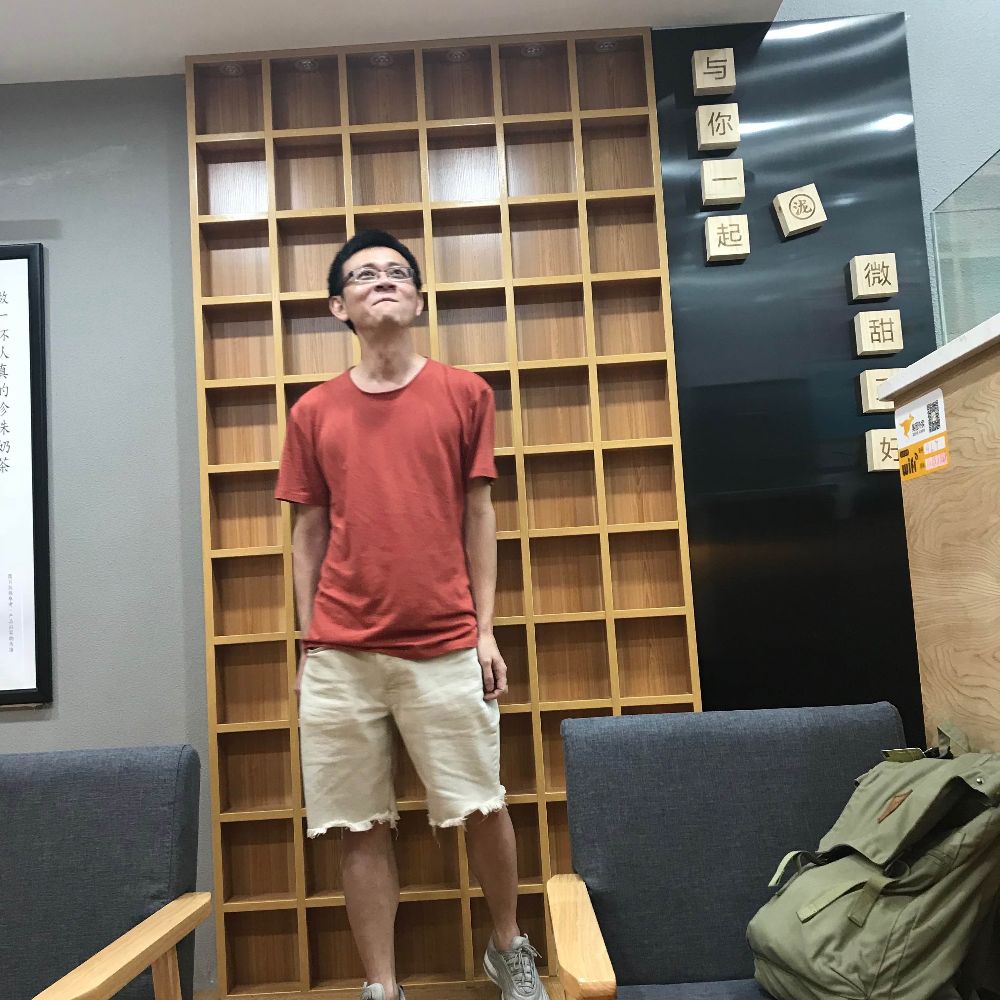

Thanana Nuchkrua
|  | Data and Control Scientist |
 Contact
Contact Scholar
Scholar ORCiD
ORCiDHighlights:
09.2019: \(''\)Contouring Control Consensus for Robot Manipulators\(''\) won the best young paper award, finalist at The 58th Annual Conference of the Society of Instrument and Control Engineers of Japan (SICE), Japan.
01.2019: \(''\)Sparse Bayesian Learning-based Adaptive Impedance Control in Physical Human-robot-interaction\(''\) won the best paper award at The 2019 International Symposium on Instrumentation, Control, Artificial Intelligence, and Robotics.
Research Interests
Area of "Decision under Uncertainty" in aspect of DATA scienceProfessional Services
Program Committee
The 2019 IEEE International Conference on Robotics and Biomimetics (ROBIO 2019), Yunnan, China
Session Chair
\(''\)Model Learning for Control\(''\), 14th IEEE International Conference on Automation Science and Engineering (CASE 2018), August 20-24, 2018, TU München, Germany.
\(''\)Robotic and Automation Systems II\(''\), The 58th Annual Conference of the Society of Instrument and Control Engineers of Japan (SICE), September 10-13, 2019, Hiroshima, Japan.
Talk
Control, Learning, and Optimization: from physic-based to data-driven
Learning-based Non-linear Adaptive Robust Control Framework: Dual-arm Robot